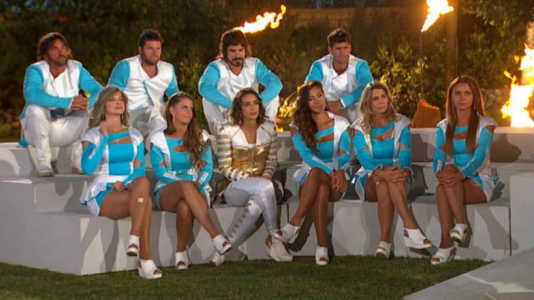

¿Eres fanático de los realities cómo nosotros?, queremos perfilar al personaje estrella, ¿Qué características tiene?
¡Acompáñanos a descubrirlo!
Maximiliano Jaque cuando era niño soñaba con ser famoso, no le importaba si era participando en un reality de televisión o siendo un animador de matinales. Pero sabía que era algo que deseaba mucho. En reuniones familiares sus padres a menudo hablaban de realities famosos, como Protagonistas de la Fama o La Granja VIP. Un día cuando Jaque tenía 8 años, se encontraba tomando once con sus papás, y se emocionó al ver que comenzaría un nuevo reality, Mundos Opuestos, uno de los más vistos en la historia de la tv chilena, incluso en una ocasión, su rating sustituyo al festival de viña.
El comercial que vio el pequeño Jaque anunciaba el programa como una competencia donde personas convivirían, pero divididos por un muro que tendría a un lado el futuro y al otro lado el pasado. Jaque era un niño, y si bien el reality estaba promocionado en el horario para mayores de edad, a él le encantó y comenzó uno de sus grandes intereses, “los rostros televisivos”. Continuó viendo los realities que ofrecía la televisión chilena y siempre encariñándose con una nueva figura. “Gran parte de mi personalidad se basa en mis personajes de la tele favoritos, como Seba Ramírez o Felipe Avello, y creo que las personas siempre se identifican con famosos”. Afirma el joven fanático.
Los realities shows llegaron a nuestro país a principios del siglo XXI. Protagonistas de la Fama sería el programa precursor de un formato que, dos décadas después, sigue siendo un completo fenómeno para el público chileno, los realities. Con modalidades diversas, integrando temáticas y formatos variados, el tuétano de los realities no ha visto cambio alguno desde su llegada.
En Chile se han visto realities de todo tipo: música, actuación, competencia física, temática militar, de comida y una larga lista de temáticas, que habla de lo moldeable que puede ser este tipo de programas. Sin embargo, sin importar el tipo de reality que sea, a todos los une algo. Los personajes estrella, esos que se transforman en los favoritos del público, incluso siguen siendo queridos una vez terminado el programa.
Los personajes más queridos no siempre son los que quedan en la final, de hecho, en varias oportunidades personajes importantes son los que se han debido retirar de la competencia pese a los esfuerzos del público...
Max Jaque antes creía que los realities eran famosos por su formato, es decir, de qué era el programa...